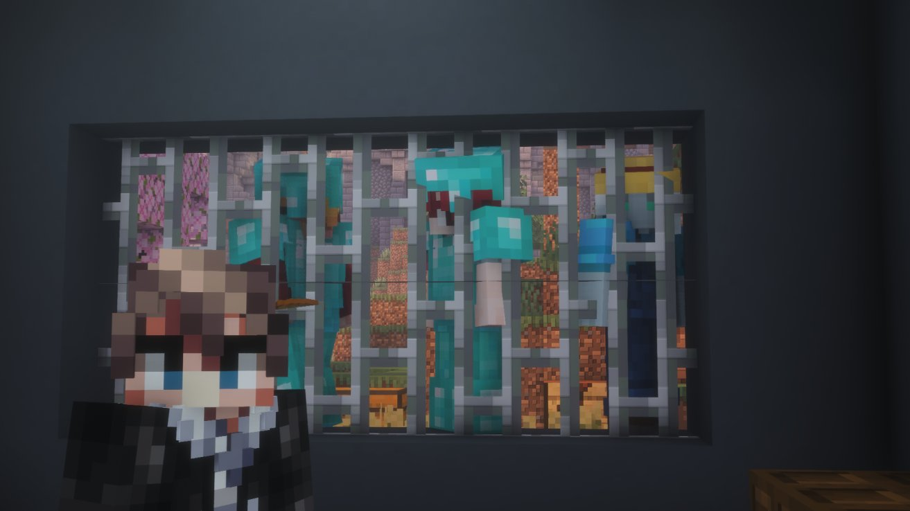
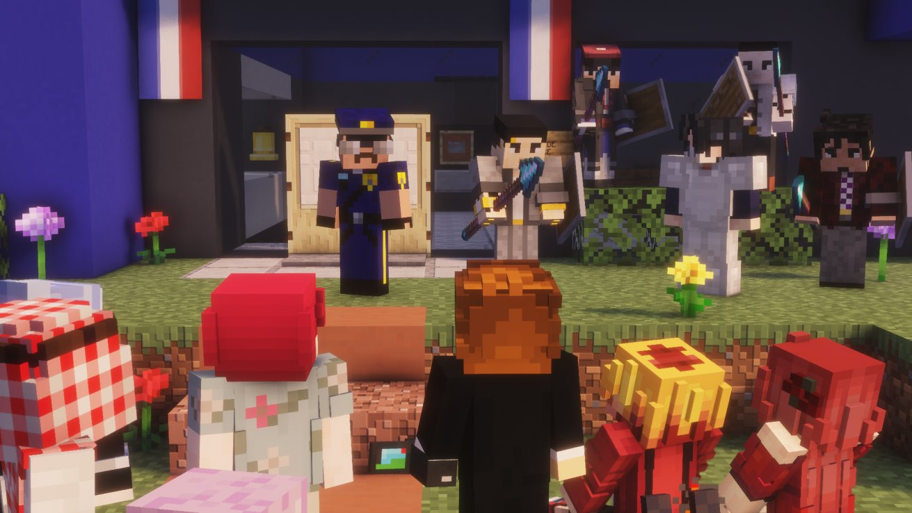

Leonhart, Martinez et leur coalition tombent dans le piège : le Karmine Déchaîné était là
La police en grève, SSIAP démissionnaire, les portes ouvertes — tout n'était qu'un leurre soigneusement orchestré. Cette nuit restera dans les annales de Karminéa. Et notre rédaction a failli ne pas en ressortir.

Ce soir restera dans les annales de Karminéa. Alan Leonhart, David Martinez et leur troisième complice révolutionnaire ont été capturés. Le Karmine Déchaîné était sur place — et a failli ne pas en ressortir. Voici le récit complet d'une nuit aussi rocambolesque que décisive.
La police en grève : un piège se referme
Tout commence par une annonce surprenante : la police déclare une grève pour la soirée, laissant le terrain apparemment libre. Dans la foulée, SSIAP annonce sa démission. Un vide sécuritaire soudain, qui ne passe pas inaperçu auprès d'Alan Leonhart et ses révolutionnaires. Convaincus que le moment est venu de frapper, ils se dirigent vers le commissariat — persuadés que la nuit leur appartient.
L'entrée au commissariat
SSIAP, désormais officiellement démissionnaire, collabore et ouvre les portes du commissariat aux révolutionnaires. Le Karmine Déchaîné, présent sur les lieux pour couvrir l'événement et tenter d'obtenir une interview exclusive, entre également dans le bâtiment. Les révolutionnaires récupèrent plusieurs documents, se croyant maîtres de la situation. C'est alors qu'Henri fait son apparition.
Henri capturé… puis le retournement de situation
À peine arrivé, Henri est capturé par les révolutionnaires et emprisonné. Le plan semble se dérouler sans accroc pour Alan Leonhart et ses hommes. Mais SSIAP n'a pas dit son dernier mot. Il propose de descendre au sous-sol pour montrer un passage secret. Nous le suivons, curieux. Et là — coup de théâtre : SSIAP nous enferme avec Alan Leonhart dans le sous-sol.
Pendant ce temps, il remonte, capture David Martinez qui était resté à l'étage, et libère Henri. En quelques minutes, le rapport de force s'est totalement inversé.

La rédaction prise au piège
Pendant plus d'une demi-heure, la rédaction du Karmine Déchaîné s'est retrouvée enfermée au sous-sol avec Alan Leonhart lui-même. Une situation aussi inconfortable qu'inédite dans notre histoire. Une fois la situation pleinement sous contrôle par les forces de l'ordre, nous avons pu être libérés.
Le Karmine Déchaîné tient à préciser qu'il est venu cette nuit dans une démarche purement journalistique — couvrir un événement et obtenir une interview. Nous n'avons à aucun moment pris part aux actions des révolutionnaires.
Le discours du président
À notre sortie, le président Mr Jackson prenait la parole devant les citoyens rassemblés. Ses mots étaient clairs et solennels : la ville avait été sécurisée, Alan Leonhart serait jugé, et il remerciait la police et ses gardes pour leur engagement cette nuit.
La prise de parole d'Henri : le plan révélé
Henri a ensuite pris la parole pour lever le voile sur la stratégie qui a conduit à cette capture historique. Son discours était court, direct et marquant. Il a révélé que tout ce plan avait été soigneusement calculé depuis le début. La grève annoncée, la démission de SSIAP, l'ouverture des portes — tout n'était qu'un leurre orchestré pour attirer les révolutionnaires dans un piège.
"Lorsqu'il n'y a plus de police, les criminels sortent."
— Henri
Ce que cette nuit change
La capture d'Alan Leonhart, de David Martinez et de leur troisième complice marque un tournant majeur pour Karminéa. Après des jours de menaces, d'attentats, de propagande et de violences, les figures de ce mouvement révolutionnaire sont désormais derrière les barreaux. Le tribunal, dont la construction a été annoncée lors du dernier conseil, ne pouvait tomber à un meilleur moment.
"Nous sommes allés chercher l'interview. Nous avons trouvé l'histoire. Même enfermés au sous-sol, nous avons fait notre travail."
— La Rédaction du Karmine Déchaîné